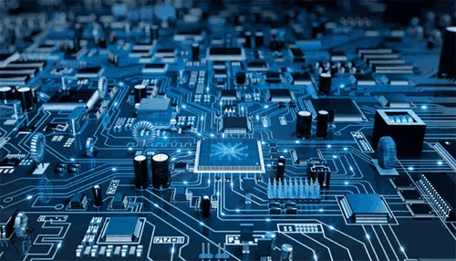
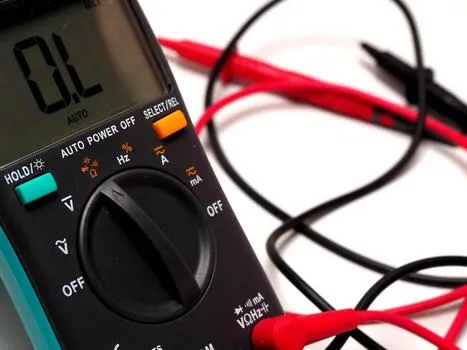
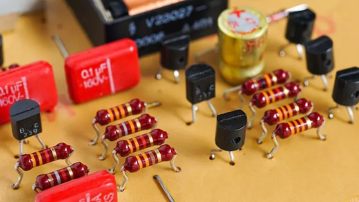
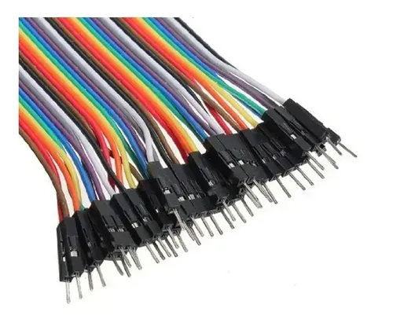
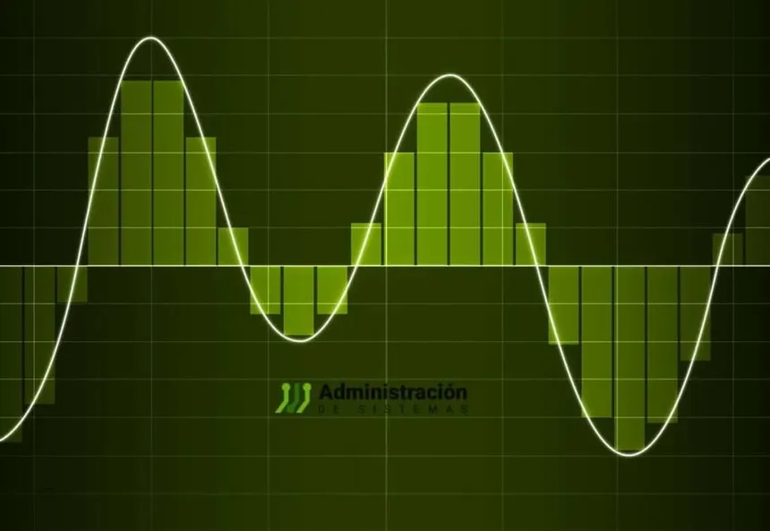
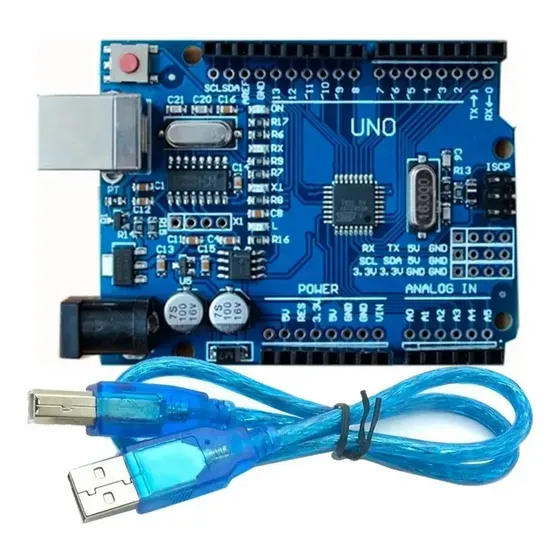

Es la rama de la fisica y la ingenieria que estudia el control del movimiento de los electrones para transportar energia e informacion.

Son las tres magnitudes basicas de todo circuito. Se relacionan entre si por medio de la ley de Ohm, que dice que V es igual a I por R.

Las resistencias, los capacitores, los diodos y los transistores son las piezas con las que se arma cualquier circuito electronico.

Un circuito es un camino cerrado por donde circula la corriente. Se pueden conectar en serie, en paralelo o de forma mixta.

La electronica analogica trabaja con señales que varian de a poco, mientras que la digital solo usa dos estados, el 0 y el 1.

La electronica esta en los celulares, los electrodomesticos, los autos y las placas programables como Arduino que se usan en robotica.